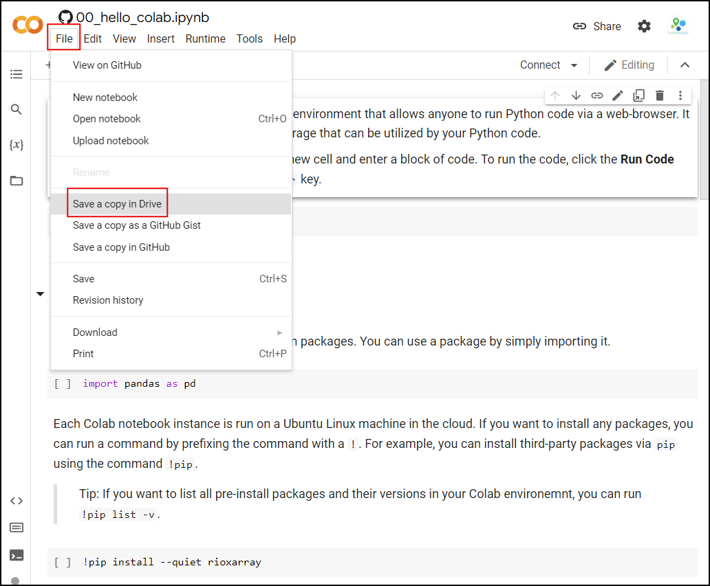

Scalable Remote Sensing Workflows with Xarray (Full Workshop)
A structured introduction to XArray, STAC and Dask with use-cases focused on cloud-based remote sensing applications.
Ujaval Gandhi

Introduction
XArray is a powerful Python package for working with climate and earth observation datasets. Inspired by libraries like pandas - it is particularly suited for working with multi-dimensional time-series raster datasets. With the growing ecosystem of spatial extensions like rioxarray and xarray-spatial and built-in support for parallel computing with Dask, it has become the de-facto standard for working with large spatio-temporal raster datasets. This workshop will show you how you can use it to effectively process large volumes of earth observation data using cloud-based datasets.
Notebooks and Datasets
This workshop uses Google Colab for all exercises. You do not need to install any packages or download any datasets.
The notebooks can be accessed by clicking on the  buttons at the beginning of each section. Once
you have opened the notebook in Colab, you can copy it to your own
account by going to File → Save a Copy in Drive.
buttons at the beginning of each section. Once
you have opened the notebook in Colab, you can copy it to your own
account by going to File → Save a Copy in Drive.

Once the notebooks are saved to your drive, you will be able to modify the code and save the updated copy. You can also click the Share button and share a link to the notebook with others.

Hello Colab

Google Colab is a hosted Jupyter notebook environment that allows anyone to run Python code via a web-browser. It provides you free computation and data storage that can be utilized by your Python code.
You can click the +Code button to create a new cell and
enter a block of code. To run the code, click the Run
Code button next to the cell, or press Shirt+Enter
key.
Package Management
Colab comes pre-installed with many Python packages. You can use a package by simply importing it.
Each Colab notebook instance is run on a Ubuntu Linux machine in the
cloud. If you want to install any packages, you can run a command by
prefixing the command with a !. For example, you can
install third-party packages via pip using the command
!pip.
Tip: If you want to list all pre-install packages and their versions in your Colab environemnt, you can run
!pip list -v.
Data Management
Colab provides 100GB of disk space along with your notebook. This can be used to store your data, intermediate outputs and results.
The code below will create 2 folders named ‘data’ and ‘output’ in your local filesystem.
import os
data_folder = 'data'
output_folder = 'output'
if not os.path.exists(data_folder):
os.mkdir(data_folder)
if not os.path.exists(output_folder):
os.mkdir(output_folder)We can download some data from the internet and store it in the Colab environment. Below is a helper function to download a file from a URL.
import requests
def download(url):
filename = os.path.join(data_folder, os.path.basename(url))
if not os.path.exists(filename):
with requests.get(url, stream=True, allow_redirects=True) as r:
with open(filename, 'wb') as f:
for chunk in r.iter_content(chunk_size=8192):
f.write(chunk)
print('Downloaded', filename)Let’s download the Populated Places dataset from Natural Earth.
The file is now in our local filesystem. We can construct the path to
the data folder and read it using geopandas
file = 'ne_10m_populated_places_simple.zip'
filepath = os.path.join(data_folder, file)
places = gpd.read_file(filepath)Let’s do some data processing and write the results to a new file. The code below will filter all places which are also country capitals.
We can write the results to the disk as a GeoPackage file.
output_file = 'capitals.gpkg'
output_path = os.path.join(output_folder, output_file)
capitals.to_file(driver='GPKG', filename=output_path)You can open the Files tab from the left-hand panel
in Colab and browse to the output folder. Locate the
capitals.gpkg file and click the ⋮ button
and select Download to download the file locally.
1. XArray Basics

Overview
XArray
has emerged as one of the key Python libraries to work with gridded
raster datasets. It can natively handle time-series data making it ideal
for working with Remote Sensing datasets. It builds on NumPy/Pandas for
fast arrays/indexing and is orders of magnitude faster than other Python
libraries like rasterio. It has a growing ecosystem of
extensions rioxarray, xarray-spatial,
XEE and more allowing it to be used for geospatial
analysis. XArray offers the flexibility to seamlessly work with local
datasets along with cloud-hosted datasets in a variety of optimized data
formats.
In this section, we will learn about XArray basics and learn how to work with a time-series of Sentinel-2 satellite imagery to create and visualize a median composite image.
Setup and Data Download
The following blocks of code will install the required packages and download the datasets to your Colab environment.
%%capture
if 'google.colab' in str(get_ipython()):
!pip install pystac-client odc-stac rioxarray daskGet Satellite Imagery
We define a location and time of interest to get some satellite imagery.
Let’s use Element84 search endpoint to look for items from the sentinel-2-l2a collection on AWS.
catalog = pystac_client.Client.open(
'https://earth-search.aws.element84.com/v1')
# Define a small bounding box around the chosen point
km2deg = 1.0 / 111
x, y = (longitude, latitude)
r = 1 * km2deg # radius in degrees
bbox = (x - r, y - r, x + r, y + r)
search = catalog.search(
collections=['sentinel-2-c1-l2a'],
bbox=bbox,
datetime=f'{year}',
query={'eo:cloud_cover': {'lt': 30}},
)
items = search.item_collection()Load the matching images as a XArray Dataset.
XArray Terminology
We now have a xarray.Dataset object. Let’s understand
what is contained in a Dataset.
- Variables: This is similar to a band in a raster dataset. Each variable contains an array of values.
- Dimensions: This is similar to number of array axes.
- Coordinates: These are the labels for values in each dimension.
- Attributes: This is the metadata associated with the dataset.

A Dataset consists of one or more xarray.DataArray
object. This is the main object that consists of a single variable with
dimension names, coordinates and attributes. You can access each
variable using dataset.variable_name syntax.
Selecting Data
XArray provides a very powerful way to select subsets of data, using
similar framework as Pandas. Similar to Panda’s loc and
iloc methods, XArray provides sel and
isel methods. Since DataArray dimensions have names, these
methods allow you to specify which dimension to query.
Let’s select the temperature anomany values for the last time step.
Since we know the index (-1) of the datam we can use isel
method.
You can call .values on a DataArray to get an array of
the values.
You can query for a values at using multiple dimensions.
We can also specify a value to query using the sel()
method.
Let’s see what are the values of time variable.
We can query using the value of a coordinate using the
sel() method.
The sel() method also support nearest neighbor lookups.
This is useful when you do not know the exact label of the dimension,
but want to find the closest one.
Tip: You can use
interp()instead ofsel()to interpolate the value instead of closest lookup.
The sel() method also allows specifying range of values
using Python’s built-in slice() function. The code below
will select all observations during January 2023.
Aggregating Data
A very-powerful feature of XArray is the ability to easily aggregate data across dimensions - making it ideal for many remote sensing analysis. Let’s create a median composite from all the individual images.
We apply the .median() aggregation across the
time dimension.
Visualizing Data
XArray provides a plot.imshow() method based on
Matplotlib to plot DataArrays.
Reference : xarray.plot.imshow
To visualize our Dataset, we first convert it to a DataArray using
the to_array() method. All the variables will be converted
to a new dimension. Since our variables are image bands, we give the
name of the new dimesion as band.
The easy way to visualize the data without the outliers is to pass
the parameter robust=True. This will use the 2nd and 98th
percentiles of the data to compute the color limits. We also specify the
set_aspect('equal') to ensure the original aspect ratio is
maintained and the image is not stretched.
fig, ax = plt.subplots(1, 1)
fig.set_size_inches(5,5)
median_da.sel(band=['red', 'green', 'blue']).plot.imshow(
ax=ax,
robust=True)
ax.set_title('RGB Visualization')
ax.set_axis_off()
ax.set_aspect('equal')
plt.show()
We can save the resulting median compositeas a multi-band GeoTIFF file.
Exercise
Display the median composite for the month of May.
The snippet below takes our time-series and aggregate it to a monthly
median composites groupby() method.
You now have a new dimension named month. Start your
exercise by first converting the Dataset to a DataArray. Then extract
the data for the chosen month using sel() method and plot
it.
2. STAC and Dask Basics

Overview
In this section, we will learn the basics of querying cloud-hosted data via STAC and leverage parallel computing via Dask.
We will learn how to query a catalog of Sentinel-2 images to find the least-cloudy scene over a chosen area, visualize it and download it as a GeoTIFF file.
Setup and Data Download
The following blocks of code will install the required packages and download the datasets to your Colab environment.
Dask
Dask is a python
library to run your computation in parallel across many machines. Dask
has built-in support for key geospatial packages like XArray and Pandas
allowing you to scale your computation easily. You can choose to run
your code in parallel on your laptop, a machine in the cloud, local or
cloud cluster of machines etc.
f you are running this notebook in Colab, you will need to create and use a proxy URL to see the dashboard running on the local server.
Spatio Temporal Asset Catalog (STAC)
Spatio Temporal Asset Catalog (STAC) is an open standard for specifying and querying geospatial data. Data provider can share catalogs of satellite imagery ,climate datasets, LIDAR data, vector data etc. and specify asset metadata according to the STAC specifications. All STAC catalogs can be queried to find matching assets by time, location or metadata.
You can browse all available catalogs at https://stacindex.org/
Let’s use Earth Search by Element 84 STAC API Catalog to look for items from the sentinel-2-l2a collection on AWS.
We define a location and time of interest to get some satellite imagery.
# Define a small bounding box around the chosen point
km2deg = 1.0 / 111
x, y = (longitude, latitude)
r = 1 * km2deg # radius in degrees
bbox = (x - r, y - r, x + r, y + r)Search the catalog for matching items.
search = catalog.search(
collections=['sentinel-2-c1-l2a'],
bbox=bbox,
datetime=f'{year}'
)
items = search.item_collection()
itemsWe can apply some additional metadata filters to look for images with less cloud cover and granules with less nodata pixels.
search = catalog.search(
collections=['sentinel-2-c1-l2a'],
bbox=bbox,
datetime=f'{year}',
query={'eo:cloud_cover': {'lt': 30}, 's2:nodata_pixel_percentage': {'lt': 10}}
)
items = search.item_collection()
itemsWe can also sort the results by some metadata. Here we sort by cloud cover.
Load STAC Images to XArray
Load the matching images as a XArray Dataset.
ds = stac.load(
items,
bands=['red', 'green', 'blue', 'nir'],
resolution=10,
chunks={}, # <-- use Dask
groupby='solar_day',
preserve_original_order=True
)
dsUsexarray.Dataset.nbytes
property to check the size of the loaded dataset.
Select a Single Scene
Let’s work with a single scene for now. We will use the first item
from our search (the least cloudy scene). When the items are loaded as a
XArray Dataset, the time dimension is sorted. We get the
timestamp of the least cloudy scene and select it from the dataset.
timestamp = pd.to_datetime(items[0].properties['datetime']).tz_convert(None)
scene = ds.sel(time=timestamp)
sceneThis scene is small enough to fit into RAM, so let’s call
compute() to load this into memory. Dask will query the
cloud-hosted dataset to fetch the required pixels. As we setup a Dask
LocalCluster, the process will be paralellized across all available
cores of the machine. Once you run the cell, look at the Dask Diagnostic
Dashboard to see the data processing in action.
The Sentinel-2 scenes come with NoData value of 0. So we set the correct NoData value before further processing.
Each band of the scene is saved with integer pixel values (data type
uint16). This help save the storage cost as storing the
reflectance values as floating point numbers (data type
float64) requires more storage. We need to convert the raw
pixel values to reflectances by applying the scale and
offset values. The Earth Search STAC
API does not apply the scale/offset automatically to Sentinel-2
scene and they are supplied in the raster:bands metadata
for each band. The scale and offset for sentinel-2 scenes captured after
Jan 25, 2022 is 0.0001 and -0.1
respectively.
Visualize the Scene
To visualize our Dataset, we first convert it to a DataArray using
the to_array() method. All the variables will be converted
to a new dimension. Since our variables are image bands, we give the
name of the new dimesion as band.
We can create a low-resolution preview by resampling the DataArray
from its native resolution. The raster metadata is stored in the rio
accessor. This is enabled by the rioxarray library
which provides geospatial functions on top of xarray.
This is a fairly large scene with a lot of pixels. For visualizing,
we resample it to a lower resolution preview. When plotting the image,
the robust=True option applies a 98-percentile
stretch to find the optimal min/max values for visualization.
Save the Scene to Disk
scene_id = items[0].id
output_da = scene_da.sel(band=['red', 'green', 'blue'])
output_file = f'{scene_id}.tif'Rather than saving it to the temporary machine where Colab is running, we can save it to our own Google Drive. This will ensure the image will be available to us even after existing Google Colab.
Run the following cell to authenticate and mount the Google Drive.
3. Calculating Spectral Indices

Overview
Spectral indices are core to many remote sensing analysis. In this section, we will learn how can we perform calculations using XArray.
We will take a single Sentinel-2 scene and calculate spectral indices like NDVI, MNDWI and SAVI.
Setup and Data Download
The following blocks of code will install the required packages and download the datasets to your Colab environment.
%%capture
if 'google.colab' in str(get_ipython()):
!pip install pystac-client odc-stac rioxarray dask jupyter-server-proxyimport os
import matplotlib.pyplot as plt
import pandas as pd
import pystac_client
from odc import stac
import xarray as xr
import rioxarray as rxrf you are running this notebook in Colab, you will need to create and use a proxy URL to see the dashboard running on the local server.
Get a Sentinel-2 Scene
We define a location and time of interest to get some satellite imagery.
# Define a small bounding box around the chosen point
km2deg = 1.0 / 111
x, y = (longitude, latitude)
r = 1 * km2deg # radius in degrees
bbox = (x - r, y - r, x + r, y + r)Search the catalog for matching items.
# Query the STAC Catalog
catalog = pystac_client.Client.open(
'https://earth-search.aws.element84.com/v1')
search = catalog.search(
collections=['sentinel-2-c1-l2a'],
bbox=bbox,
datetime=f'{year}',
query={'eo:cloud_cover': {'lt': 30}, 's2:nodata_pixel_percentage': {'lt': 10}},
sortby=[{'field': 'properties.eo:cloud_cover', 'direction': 'asc'}]
)
items = search.item_collection()
# Load to XArray
ds = stac.load(
items,
bands=['red', 'green', 'blue', 'nir', 'swir16'],
resolution=10,
chunks={}, # <-- use Dask
groupby='solar_day',
preserve_original_order=True
)
# Select the first scene
timestamp = pd.to_datetime(items[0].properties['datetime']).tz_convert(None)
scene = ds.sel(time=timestamp)
# Mask nodata values
scene = scene.where(scene != 0)
# Apply scale/offset
scale = 0.0001
offset = -0.1
scene = scene*scale + offsetVisualize the Scene
To visualize our Dataset, we first convert it to a DataArray using
the to_array() method. All the variables will be converted
to a new dimension. Since our variables are image bands, we give the
name of the new dimesion as band.
Rather than loading the entire scene into memory, we resample it to a lower resolution preview and render it.
preview = scene_da.rio.reproject(
scene.rio.crs, resolution=300
)
fig, ax = plt.subplots(1, 1)
fig.set_size_inches(5,5)
preview.sel(band=['red', 'green', 'blue']).plot.imshow(
ax=ax,
robust=True)
ax.set_title('RGB Visualization')
ax.set_axis_off()
ax.set_aspect('equal')
plt.show()We can also view a False Color Composite (FCC) with a different combination of spectral bands.
Calculate Spectral Indices
The Normalized Difference Vegetation Index (NDVI) is calculated using the following formula:
NDVI = (NIR - Red)/(NIR + Red)
Where: * NIR = Near-Infrared band reflectance * Red = Red band reflectance
Let’s visualize the results.
ndvi_preview = ndvi.rio.reproject(
ndvi.rio.crs, resolution=300
)
cbar_kwargs = {
'orientation':'horizontal',
'fraction': 0.025,
'pad': 0.05,
'extend':'neither'
}
fig, ax = plt.subplots(1, 1)
fig.set_size_inches(5,5)
ndvi_preview.plot.imshow(
ax=ax,
cmap='Greens',
robust=True,
cbar_kwargs=cbar_kwargs)
ax.set_title('NDVI')
ax.set_axis_off()
plt.show()The Modified Normalized Difference Water Index (MNDWI) is calculated using the following formula:
MNDWI = (Green - SWIR1)/(Green + SWIR1)
Where: * Green = Green band reflectance * SWIR1 = Short-wave infrared band 1 reflectance
green = scene_da.sel(band='green')
swir16 = scene_da.sel(band='swir16')
mndwi = (green - swir16)/(green + swir16)The Soil Adjusted Vegetation Index (SAVI) is calculated using the following formula:
SAVI = (1 + L) * ((NIR - Red)/(NIR + Red + L))
Where: * NIR = Near-Infrared band reflectance * Red = Red band reflectance * L = Soil brightness correction factor (typically 0.5 for moderate vegetation)
Save the Computed Indices
Rather than saving it to the temporary machine where Colab is running, we can save it to our own Google Drive. This will ensure the image will be available to us even after existing Google Colab.
Run the following cell to authenticate and mount the Google Drive.
drive_folder_root = 'MyDrive'
output_folder = 'data'
output_folder_path = os.path.join(
'/content/drive', drive_folder_root, output_folder)
# Check if Google Drive is mounted
if not os.path.exists('/content/drive'):
print("Google Drive is not mounted. Please run the cell above to mount your drive.")
else:
if not os.path.exists(output_folder_path):
os.makedirs(output_folder_path)4. Masking Clouds

Overview
When working with optical satellite imagery, we need to ensure the cloudy-pixels are removed from analysis. Most providers supply QA bands detailing locations of cloudy pixels. There are also third-party cloud-masking packages that can be used to locate and mask cloudy pixels.
In this section, we will use the Scene Classification (SCL) band supplied with Sentinel-2 Level-2A images to remove clouds and cloud-shadows from a scene.
Setup and Data Download
The following blocks of code will install the required packages and download the datasets to your Colab environment.
%%capture
if 'google.colab' in str(get_ipython()):
!pip install pystac-client odc-stac rioxarray dask jupyter-server-proxyimport os
import matplotlib.pyplot as plt
from matplotlib.colors import ListedColormap
import pandas as pd
import pystac_client
from odc import stac
import xarray as xr
import rioxarray as rxrf you are running this notebook in Colab, you will need to create and use a proxy URL to see the dashboard running on the local server.
Get a Sentinel-2 Scene
We define a location and time of interest to get some satellite imagery.
# Define a small bounding box around the chosen point
km2deg = 1.0 / 111
x, y = (longitude, latitude)
r = 1 * km2deg # radius in degrees
bbox = (x - r, y - r, x + r, y + r)Search the catalog for matching items. This time we use
'direction': 'desc' in the sortby parameter to
get results where the first scene has the highest cloud-cover.
# Query the STAC Catalog
catalog = pystac_client.Client.open(
'https://earth-search.aws.element84.com/v1')
search = catalog.search(
collections=['sentinel-2-c1-l2a'],
bbox=bbox,
datetime=f'{year}',
query={
'eo:cloud_cover': {'lt': 50},
's2:nodata_pixel_percentage': {'lt': 10}},
sortby=[
{'field': 'properties.eo:cloud_cover',
'direction': 'desc'}
]
)
items = search.item_collection()
# Load to XArray
ds = stac.load(
items,
bands=['red', 'green', 'blue', 'scl'],
resolution=10,
chunks={}, # <-- use Dask
groupby='solar_day',
preserve_original_order=True
)
# Select the first scene
timestamp = pd.to_datetime(items[0].properties['datetime']).tz_convert(None)
scene = ds.sel(time=timestamp)
# Mask nodata values
scene = scene.where(scene != 0)
# Apply scale/offset
scale = 0.0001
offset = -0.1
# Select spectral bands (all except 'scl')
data_bands = [band for band in scene.data_vars if band != 'scl']
for band in data_bands:
scene[band] = scene[band] * scale + offsetVisualize the Scene
The clouds will have a much higher reflectance, so
robust=True will not give us appropriate visualization. We
supply hardcoded min/max values as 0 and 0.3 which is the normal range
of reflectance values of earth targets.
scene_da = scene.to_array('band')
preview = scene_da.rio.reproject(
scene_da.rio.crs, resolution=300
)
fig, ax = plt.subplots(1, 1)
fig.set_size_inches(5,5)
preview.sel(band=['red', 'green', 'blue']).plot.imshow(
ax=ax,
vmin=0, vmax=0.3)
ax.set_title('RGB Visualization')
ax.set_axis_off()
ax.set_aspect('equal')
plt.show()Create a Cloud Mask
The Scene Classification (SCL) band has each pixel classified into one of the following classes.
| Value | Description |
|---|---|
| 0 | No Data |
| 1 | Saturated or defective pixel |
| 2 | Dark area pixels |
| 3 | Cloud shadows |
| 4 | Vegetation |
| 5 | Not vegetated |
| 6 | Water |
| 7 | Clouds Low Probability / Unclassified |
| 8 | Cloud medium probability |
| 9 | Cloud high probability |
| 10 | Thin cirrus |
| 11 | Snow / Ice |
We select the types of pixels we want to mask. Let’s create a mask
that will remove all pixels marked Cloud shadows (3),
Cloud Medium Probability (8),
Cloud High Probability (9) and
Thin Cirrus (10).
Visualize the mask by overlaying it on the scene.
mask_preview = mask.astype('uint8').rio.reproject(
mask.rio.crs, resolution=300
)
fig, (ax0, ax1) = plt.subplots(1, 2)
fig.set_size_inches(10,5)
preview.sel(band=['red', 'green', 'blue']).plot.imshow(
ax=ax0,
vmin=0, vmax=0.3)
ax0.set_title('RGB Visualization')
preview.sel(band=['red', 'green', 'blue']).plot.imshow(
ax=ax1,
vmin=0, vmax=0.3)
# RGBA: Transparent, Red
mask_colormap = ListedColormap(['#00000000', '#FF0000FF'])
mask_preview.plot.imshow(
ax=ax1,
cmap=mask_colormap,
add_colorbar=False)
ax1.set_title('Cloud Mask')
for ax in (ax0, ax1):
ax.set_axis_off()
ax.set_aspect('equal')
plt.show()Once we are satisfied that the mask looks good, we go ahead and apply the mask on the scene.
Save the Results
Rather than saving it to the temporary machine where Colab is running, we can save it to our own Google Drive. This will ensure the image will be available to us even after existing Google Colab.
Run the following cell to authenticate and mount the Google Drive.
drive_folder_root = 'MyDrive'
output_folder = 'data'
output_folder_path = os.path.join(
'/content/drive', drive_folder_root, output_folder)
# Check if Google Drive is mounted
if not os.path.exists('/content/drive'):
print("Google Drive is not mounted. Please run the cell above to mount your drive.")
else:
if not os.path.exists(output_folder_path):
os.makedirs(output_folder_path)scene_id = items[0].id
# Convert to DataArray for saving
output_masked_da = scene_masked.to_array('band').sel(band=['red', 'green', 'blue'])
output_file_masked = f'{scene_id}_masked.tif'
output_file_path = os.path.join(output_folder_path, output_file_masked)
output_masked_da.rio.to_raster(output_file_path, compress='LZW')5. Extracting Time-Series

Overview
We are now ready to scale our analysis. Having learned how to calculate spectral indices and do cloud masking for a single scene - we can easily apply these operations to the entire data-cube and extract the results at at one or more locations. Cloud-optimized data formats and Dask ensure that we fetch and process only a small amount of data that is required to compute the results at the pixels of interest.
In this section, we will get all Sentinel-2 scenes collected over our region of interest, apply a cloud-mask, calculate NDVI and extract a time-series of NDVI at a single location. We will also use XArray’s built-in time-series processing functions to interpolat and smooth the results.
Setup and Data Download
The following blocks of code will install the required packages and download the datasets to your Colab environment.
%%capture
if 'google.colab' in str(get_ipython()):
!pip install pystac-client odc-stac rioxarray dask jupyter-server-proxyimport os
import matplotlib.pyplot as plt
import pystac_client
from odc import stac
import xarray as xr
import rioxarray as rxr
import pyprojf you are running this notebook in Colab, you will need to create and use a proxy URL to see the dashboard running on the local server.
Get Satellite Imagery using STAC API
We define a location and time of interest to get some satellite imagery.
# Define a small bounding box around the chosen point
km2deg = 1.0 / 111
x, y = (longitude, latitude)
r = 1 * km2deg # radius in degrees
bbox = (x - r, y - r, x + r, y + r)Let’s use Element84 search endpoint to look for items from the sentinel-2-l2a collection on AWS.
catalog = pystac_client.Client.open(
'https://earth-search.aws.element84.com/v1')
search = catalog.search(
collections=['sentinel-2-c1-l2a'],
bbox=bbox,
datetime=f'{year}',
query={'eo:cloud_cover': {'lt': 30}},
)
items = search.item_collection()Load the matching images as a XArray Dataset.
# Query the STAC Catalog
catalog = pystac_client.Client.open(
'https://earth-search.aws.element84.com/v1')
search = catalog.search(
collections=['sentinel-2-c1-l2a'],
bbox=bbox,
datetime=f'{year}',
query={
'eo:cloud_cover': {'lt': 30},
}
)
items = search.item_collection()
# Load to XArray
ds = stac.load(
items,
bands=['red', 'green', 'blue', 'nir', 'scl'],
bbox=bbox, # <-- load data only for the bbox
resolution=10,
chunks={}, # <-- use Dask
groupby='solar_day',
preserve_original_order=True
)
dsProcessing Data
We have a data cube of multiple scenes collected through the year. As XArray supports vectorized operations, we can work with the entire DataSet the same way we would process a single scene.
The Sentinel-2 scenes come with NoData value of 0. So we set the correct NoData value before further processing.
Apply scale and offset to all spectral bands
# Apply scale/offset
scale = 0.0001
offset = -0.1
# Select spectral bands (all except 'scl')
data_bands = [band for band in ds.data_vars if band != 'scl']
for band in data_bands:
ds[band] = ds[band] * scale + offsetApply the cloud mask
Calculate NDVI and add it as a data variable.
Extracting Time-Series
We have a dataset with cloud-masked NDVI values at each pixel of each scene. Remember that none of these values are computed yet. Dask has a graph of all the operations that would be required to calculate the results.
We can now query this results for values at our chosen location. Once
we run compute() - Dask will fetch the required tiles from
the source data and run the operations to give us the results.
Our location coordinates are in EPSG:4326 Lat/Lon. Convert it to the CRS of the dataset so we can query it.
crs = ds.rio.crs
transformer = pyproj.Transformer.from_crs('EPSG:4326', crs, always_xy=True)
x, y = transformer.transform(longitude, latitude)
x,yQuery NDVI values at the coordinates.
Run the calculation and load the results into memory.
Plot the time-series.
import matplotlib.dates as mdates
fig, ax = plt.subplots(1, 1)
fig.set_size_inches(15, 7)
time_series.plot.line(
ax=ax, x='time',
marker='o', color='#238b45',
linestyle='-', linewidth=1, markersize=4)
# Format the x-axis to display dates as YYYY-MM
ax.xaxis.set_major_formatter(mdates.DateFormatter('%Y-%m'))
ax.xaxis.set_major_locator(mdates.MonthLocator(interval=2))
ax.set_title('NDVI Time-Series')
plt.show()
Interpolate and Smooth the time-series
We use XArray’s excellent time-series processing functionality to smooth the time-series and remove noise.
# As we are proceesing the time-series,
# it needs to be in a single chunk along the time dimension
time_series = time_series.chunk(dict(time=-1))First, we resample the time-series to have a value every 5-days and fill the missing values with linear interpolation. Then we apply a moving-window smoothing to remove noise.
time_series_resampled = time_series\
.resample(time='5d').mean(dim='time').chunk(dict(time=-1))
time_series_interpolated = time_series_resampled \
.interpolate_na('time', use_coordinate=False)
time_series_smoothed = time_series_interpolated \
.rolling(time=3, min_periods=1, center=True).mean()fig, ax = plt.subplots(1, 1)
fig.set_size_inches(15, 7)
time_series.plot.line(
ax=ax, x='time',
marker='^', color='#66c2a4',
linestyle='--', linewidth=1, markersize=2)
time_series_smoothed.plot.line(
ax=ax, x='time',
marker='o', color='#238b45',
linestyle='-', linewidth=1, markersize=4)
# Format the x-axis to display dates as YYYY-MM
ax.xaxis.set_major_formatter(mdates.DateFormatter('%Y-%m'))
ax.xaxis.set_major_locator(mdates.MonthLocator(interval=2))
ax.set_title('Original vs. Smoothed NDVI Time-Series')
plt.show()
License
This workshop material is licensed under a Creative Commons Attribution 4.0 International (CC BY 4.0). You are free to re-use and adapt the material but are required to give appropriate credit to the original author as below:
Scalable Remote Sensing Workflows with Xarray workshop by Ujaval Gandhi www.spatialthoughts.com
© 2025 Spatial Thoughts www.spatialthoughts.com
If you want to report any issues with this page, please comment below.